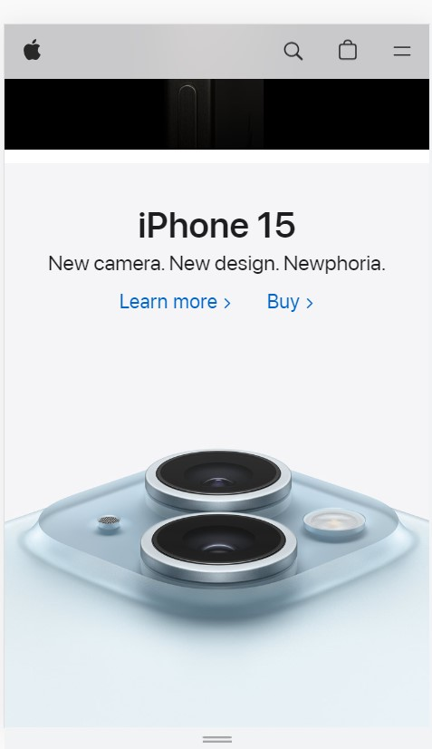

Apple's website is iconic for it's clean, simple design and ample use of white space. The use of white space allows the designer to cue customers to focus in on the one most important product. It's easy on the eyes and creates a pleasing web browsing experience.